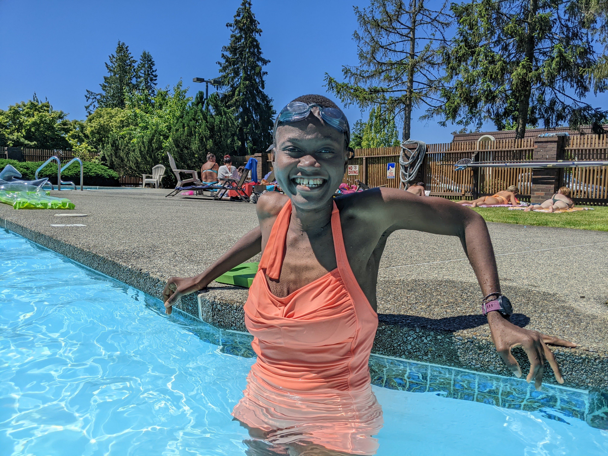
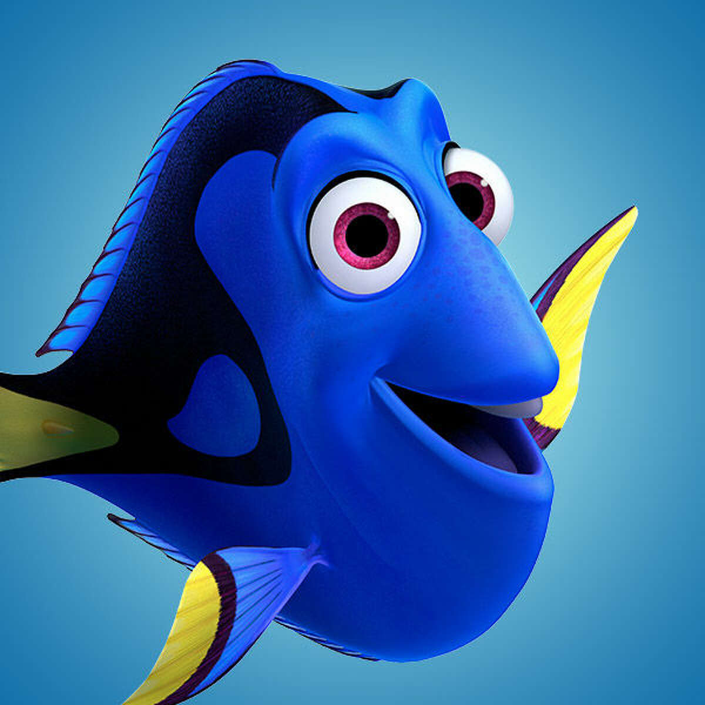

For most people, July 6th 2023 was one of those uneventful days, hardly distinguishable from any other sunny day in Seattle. It will be hard for me to forget this fine Thursday because, as dramatic as it sounds, something happened that happens once in a lifetime. Just before 6:31pm, I swam from one end of the pool to the other unassisted for the very first time. After years of struggling with freestyle and breathing I can finally claim the swimmer badge. Statistically speaking this is nothing special, thousands reach this milestone everyday and I’m sure many did so on the same day. I almost brushed it off until my neighbors complimented me on how much I’ve improved over the years; Yes, the moment was not particularly interesting but what you really wanna hear is the backstory.

I don’t remember when or why I got into swimming, it has always been something I wanted to do probably because many people I know swim. Once I got freetime and disposable income, I tried some lessons but then quickly hit the undeniable barrier to entry. See, to be a good swimmer, you have to practice which requires access to a pool, commitment to actually practice and for most people, back and forth commute to the said pool. All this has to happen during pool hours which ussually coincides with business hours, running hours, happy hours and simply-existing hours. Given that I’m not a natural swimmer and I had other commitments, practice was simply not a priority.
I didn’t give up on swimming but I made it soft goal. A soft goal is one you pursue at best effort ussually without any timelines or pressure. Soft goals are fun, we should all have soft goals. The goal was to simply be able to swim a lap, however long that would take. At least twice a week I committed to be in the pool and do something, anywhere from a float to breathing practice. The details didn’t matter as much as the action. That’s what I did for the past 3 summers. Yes, I slacked on some weeks, sometimes I spent more time procrastinating than actual practising and I didn’t see progress for many days. Slowly but surely, July 6th happened.
In that moment, I felt a lot of things; the humility of baby steps, the frustration of the long middle, the satisfaction of doing hard things. I definetly felt proud and confident to try more. Mastering a new skill is objectively a good thing, especially as an adult. Most of us are conditioned to never venture out of our chosen fields and hobbies past college. Sadly, most of us are missing on eureka moments and fulfillment. That said, its not entirely impossible. I’d like to share tips and lessons I learnt from this journey.
- Choose one hard thing, not two or three; just one. Make it a priority. Put it on the calendar; even just 2 minutes of thinking about the thing.
- Set a goal that scares you, feel the fear.
- Do something to move the needle forward, literally anything; When you’re noob, anything counts.
- Learn, adapt and adjust. When reality kicks in, adjust the goal, change the timeline, reset expectations.
Dory said it best, “Just keep swimming”.
